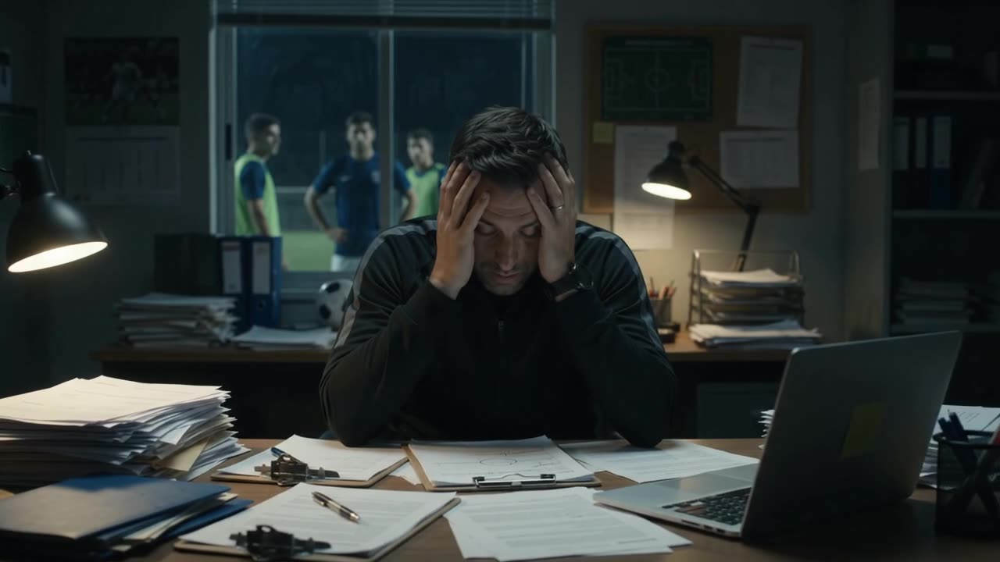

CoachSoccerPro started as one coach's fix for his own evenings. The texts at 11pm. The dues chased through a group chat. The five apps that each did one thing. We set out to build a cockpit so one person could run a whole team without losing their week to admin.
CoachSoccerPro nació como la solución de un entrenador para sus propias noches. Los mensajes a las 11 de la noche. Las cuotas perseguidas por el chat de grupo. Las cinco aplicaciones que hacían una sola cosa cada una. Nos propusimos construir una cabina de mando para que una sola persona pudiera dirigir un equipo entero sin perder la semana en administración.

Then, while building it, the real gap showed itself. The missing layer in youth football is not admin. It is the mental side of the game: what a player sees, how fast they decide, how calm they stay when it matters. Every coach knows it is what separates players. Almost no coach has the time or the tools to train it.
Y mientras lo construíamos, apareció el verdadero hueco. La capa que falta en el fútbol juvenil no es la administración. Es el lado mental del juego: qué ve un jugador, qué tan rápido decide, qué tan tranquilo se mantiene cuando importa. Todo entrenador sabe que eso es lo que separa a los jugadores. Casi ningún entrenador tiene el tiempo ni las herramientas para entrenarlo.
That realisation became SoccerMental.
Esa revelación se convirtió en SoccerMental.
SoccerMental trains the football mind at home and measures what grows. CoachSoccerPro gives the coach their evenings back and makes every child feel seen. One builds the team. The other builds the player. Coaches connect with their players through SoccerMental and never see a child's private data.
SoccerMental entrena la mente futbolera en casa y mide lo que crece. CoachSoccerPro le devuelve sus noches al entrenador y hace que cada niño se sienta visto. Una construye el equipo. La otra construye al jugador. Los entrenadores se conectan con sus jugadores a través de SoccerMental y nunca ven los datos privados de un niño.
We believe the coach is the most trusted adult in a child's sporting life outside the family. Most coaches want to be mentors. They do not have the tools or the time. We built both.
Creemos que el entrenador es el adulto de mayor confianza en la vida deportiva de un niño fuera de la familia. La mayoría de los entrenadores quieren ser mentores. No tienen las herramientas ni el tiempo. Nosotros construimos ambas.
Built by a coach. In English and Spanish from day one.
Creado por un entrenador. En español y en inglés desde el primer día.
CoachSoccerPro is wholly owned by SoccerMental LLC.CoachSoccerPro es propiedad exclusiva de SoccerMental LLC.